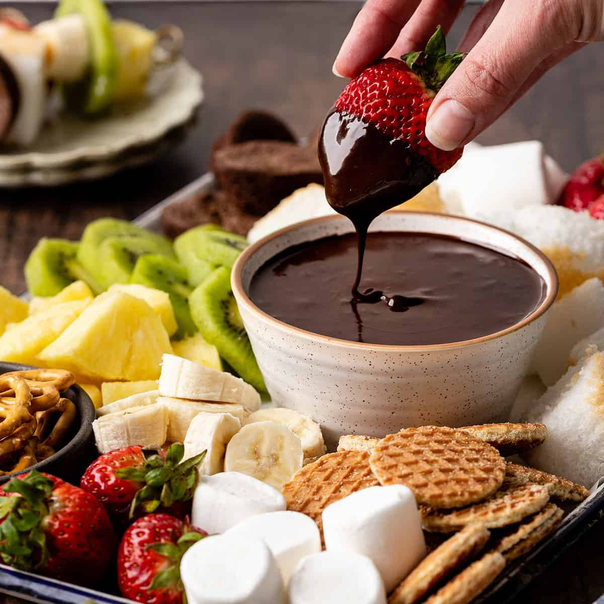

Delicious Bites Menu
Appetizers
-
Caprese Salad

Fresh tomatoes, mozzarella, and basil drizzled with balsamic glaze.
-
Mozzarella sticks

Mozzarella sticks check every single box. They're easy enough that every single restaurant can make at least passable versions of them (seriously, even fast-food restaurants do cheese sticks well), but also open to some serious elevation (a place in town does fried feta sticks that are wonderful, another place does full-on fries cheese logs that are like 2 inches by 2 inches by 4 inches, and you feel like an absolute monster eating it, but that’s okay because OH MY GOD SO GOOD). The absolute ceiling on a good wing or some nice calamari might be slightly higher than a cheese stick, but only slightly, and no food in the entire world has a higher floor than a cheese stick. Eat cheese sticks. Eat all the cheese sticks.
-
Calamari
Reportedly some of the calamari you get in restaurants might be pig rectums very stealthily disguised, through frying and such, as squid. And you know what? I don’t even care. SO GOOD.
-
Boneless wings

Separating foods into different versions of themselves is silly, but man, fingers and boneless wings and bone-in wings are such wildly different foods that I didn’t know how to rank them together. Boneless wings are good. Depending on the sauce and the preparation, they can be very good. But I can’t eat them without feeling like I’m just having grown-up McNuggets. It’s like the closest you can get to a kids meal without actually having a kids meal.
-
Chips and queso

This is kind of cheating, because the ideal chips and queso is going to be served with salsa as well, which means it’s co-opting another appetizer in itself. But whatever, this is my list. Queso is adding extra fat to the meal, and who is ever going to argue with that? This is another example of a low-floor/high-ceiling proposition, but there’s a good ceiling involved.
-
Chips and salsa

Man, is there a range of outcomes for chips and salsa. Are the chips out of a bag or are they cooked in-house? Is the salsa thick enough to get real tomato chunks, or are you dipping the chip into juice? At their floor, chips and salsa would be down in the potato skins range. But man, if you are in just the right (probably Mexican) restaurant, you’ve hit the jackpot and you will eat four baskets of chips and then be surprised when your actual food gets there.
Main Courses
-
Grilled Salmon

Salmon fillet seasoned and grilled to perfection, served with lemon butter sauce.
-
Braised chiken legs with grappes and fennel
There's nothing wrong with defaulting to chicken when you're trying to think of dinner party ideas. The key is to select a truly special chicken recipe, like this easy sweet-and-spicy braise, made with ribbons of fennel and juicy table grapes. You'll want to have a loaf of bread on the side for sopping up the sauce.
-
Seared scallops with brown butter and lemon pan sauce

Scallops are always a stunner, but these are dead simple to make: Juice lemons. Spoon out capers. Heat pan. Cook scallops. Make sauce in same pan. Serve.
-
Grilled pizza

Grilling pizza makes a main dish recipe into a party. This dough is designed for the grill—you can get creative with your toppings, or let your guests go wild. (Just don't get them started about whether you need New York tap water to make a superior slice.)
-
Double-Stack Mushroom and Chicken Cheeseburgers

These chicken-and-mushroom burgers are worthy of a weekend hangout, but totally possible to make for a casual dinner party on a weeknight. Curry mustard is the ideal condiment, but you can use whatever mustard you have on hand.
-
Quick Potato Gnocchi

Impress your friends with homemade gnocchi, then let them in on the secret: these pillowy Italian dumplings were made quicker with instant mashed potatoes. Top with Parmesan and fresh herbs, and serve a salad after.
-
Broken Lasagna With Parmesan and All the Peas

The flat, wide shapes of broken lasagna noodles drape over themselves, trapping the buttery, lemony sauce.
-
Cedar-Plank Salmon

A big salmon fillet always feels like a festive main course, especially when it's cooked on a cedar grilling plank, so it picks up a whisper of smoky flavor. Kick off your seafood-themed dinner party with grilled oysters and pair the fish with a simple tomato salad.
-
Habanero BBQ Shrimp

Marinate shrimp in a sweet-and-spicy mixture of apricot preserves, lime juice, habanero, soy sauce, garlic, and ginger—then throw them on the grill for an easy 15-minute dinner. Looking for a side dish? Perhaps this simple grilled corn recipe will do the trick.
-
Grilled Pork Spareribs With Soda Bottle Barbecue Sauce

Barbecue brisket is a whole ordeal, but you can get rich, meaty flavor faster if you focus on tender pork spareribs. These have two sauce options, made with your choice of Coca-Cola or ginger ale.
Desserts
-
Chocolate Fondue
Assorted fruits and marshmallows served with rich chocolate fondue.
-
Mixed berry mousse

A mousse is always a winning dessert option thanks to its light texture and culinary simplicity. This is especially true now that chefs are trying to provoke nostalgic sensations in their customers, bringing back childhood memories through traditional food and authentic flavours. Offer a mixed berry version of this creamy dessert for a delicious combination of sweet and tart. This is the perfect light dessert idea for your menu, leaving your clients' mouths watering even after a hearty meal.
-
Mango and coconut soufflé

Another fruity and easy-to-cook dessert recipe is the pastry perennial, a classic French soufflé. For an updated version, enrich its creamy texture with an exotic touch. We suggest taking this to the next level with chunks of mango and a coconut topping. These two fruits are very appealing to customers thanks to their natural sweetness, delicate flavours, and distinctive textures. The soft mango makes a good contrast to the crunchy, creamy coconut. Go ahead and surprise your clients with this dessert!
-
Matcha cake

Matcha has become the backbone of the modern health trend. It is commonly found in traditional Japanese mochi as a filling or as a base for cookies. Serving a slice of matcha cake, with its striking green colour, could be a great dessert idea for your menu — you'll be surprised by its popularity.